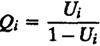
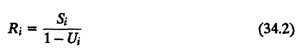

| Previous | Table of Contents | Next |
The man who makes no mistakes does not usually make anything.
— Bishop W. C. Magee
This chapter extends the results presented in Chapter 33 on operational analysis of queueing networks. In particular, a popular technique known as meanvalue analysis is presented. The technique allows analysis of computer systems that can be modeled as a closed queueing network. However, results on open queueing networks are presented first since they are easier to derive and since they help in understanding the results for closed systems.
Open queueing network models are used to represent transaction processing systems such as airline reservation systems or banking systems. In these systems, the transaction arrival rate is not dependent on the load on the computer system. The transaction arrivals are modeled as a Poisson process with a mean arrival rate λ. In this section, we present equations for an exact analysis of such systems. We assume that all devices in the computer system can be modeled as either fixed-capacity service centers (single server with exponentially distributed service time) or delay centers (infinite servers with exponentially distributed service time).
For all fixed-capacity service centers in an open queueing network, the response time is given by
| Ri = Si(1 + Qi) | (34.1) |
One easy way to understand this relationship is to consider a “tagged” job flowing through the system. On arrival at the ith device, the job sees Qi jobs ahead (including the one in service) and expects to wait QiSi seconds. Including the service to itself, the job should expect a total response time of Si(1 + Qi)
Notice that Equation (34.1) is not an operational law. It assumes that the service is memoryless, an assumption that is not operationally testable. To compute the response time of the tagged job without the memoryless assumption, we would also need to know the time that the job currently in service has already consumed.
Equation (34.1) along with the operational laws discussed earlier in Chapter 33 are sufficient to get mean values of system performance parameters, as shown next.
Assuming job flow balance, the throughput of the system is equal to the arrival rate:
X = λ
The throughput of the ith device using the forced flow law is
Xi = XVi
The utilization of the ith device using the utilization law is
Ui = XiSi = XViSi = λDi
The queue length of the ith device using Little’s law is
Qi = XiRi = XiSi(1 + Qi) = Ui(1 + Qi)
or

Notice that this equation for Qi is identical to Equation (31.3) for M/M/1 queues. Substituting this expression for Qi in Equation (34.1), the device response times are
|  |
In delay centers, there are infinite servers, and therefore, the response time is equal to the service time regardless of the queue length. The queue length, in this case, denotes the number of jobs receiving service since there is no waiting required. Thus, the response time and queue length equations for delay centers are
Ri = Si
Qi = RiXi = SiXVi = XDi = Ui
|
Box 34.1 Analysis of Open Queueing Networks
|
| Previous | Table of Contents | Next |